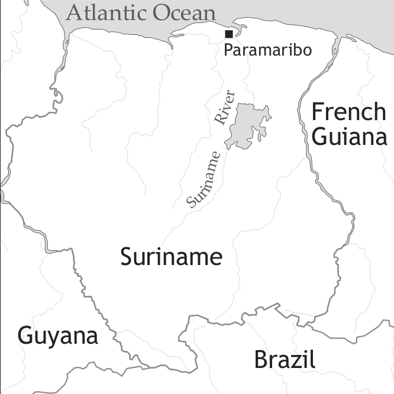

by Margot C. van den Berg and Norval S. H. Smith

From the 1650s onwards the number of languages spoken in Suriname increased to almost twenty different languages in the 20th century due to various migrations from the Amazon, India, China, Java, Africa and Europe.
Early Sranan is the cover term used here to refer to those 18th-century creole varieties that emerged on the Surinamese plantations and in the city of Paramaribo from the late 17th century onwards. Over the years multiple historical documents in and on the languages of the enslaved people of African descent in Suriname have been uncovered, resulting in a substantial and digitized corpus of 18th-century texts. These texts, stored in the Suriname Creole Archive,1 provide a unique window on the Sranan language as it was spoken in the 18th century, that is in earlier stages of its development. The texts include (a) religious texts such as Bible translations and hymns (Schumann 1781; Anonymous c. 1800); (b) judicial documents such as transcripts of interrogations and witness reports (Court Records); (c) official documents such as a peace treaty; (d) travel reports and (e) documents that were created for the purpose of language instruction such as dictionaries and language manuals by a Moravian missionary (C. L. Schumann) as well as secular persons (J.D. Herlein, P. van Dyk, J. Nepveu and G. C. Weygandt). Because of this variety of text types, variation within and among the texts may correspond to different dimensions, ranging from diachronic to social, stylistic as well as geographical. Furthermore, variation within and among the texts may further stem from the types of speech events that are represented in the texts, ranging from recorded, recalled to imagined and invented speech events. While recorded speech events such as transcripts of interrogations are the most reliable (van den Berg & Arends 2004), texts belonging to other text types need to be assessed carefully in terms of representativeness and validity. Detailed assessments can be found in the works of Smith (1987), Arends (1989), Bruyn (1995) and van den Berg (2007) among others.
The sociohistorical background of Early Sranan is presented here in a relatively sketchy manner, summarizing findings from Arends (1995, 2002), Dragtenstein (2002), Migge (2003) and van den Berg (2000, 2007) among others, which in our view contributed significantly to our understanding of the emergence and subsequent development of the creole languages of Suriname.
First, one should mention the settlement by a hundred English settlers, sent from Barbados by Francis Willoughby, along the Suriname River in 1651; the foundation of Willoughbyland is generally assumed to mark the onset of the Surinamese creole languages, even though earlier attempts at settlement are remembered in the oral history of the Saramaccan Maroons (Arends 2002). Since these English settlers and those who arrived afterwards in 1651 and 1652 already had some experience in sugar cultivation and processing (they came from Barbados and other Caribbean islands), it is generally assumed that the Surinamese colonial society quickly passed through the homestead phase (société d’habitation) and developed into a prototypical plantation society (société de plantation) relatively soon. The number of homesteads increased from some 50 units in the early 1650s to 175 small plantations in 1663, with some 500 European families and approximately 1,500 to 2,000 slaves of African and Amerindian background living on the plantations and in Thorarica (Sandpoint), the main city of Willoughbyland.
In February 1667, Abraham Crijnsen seized control of the colony on behalf of Zealand, one of the Dutch provinces. The province of Zealand had jurisdiction from 1667 until 1683, a period that is characterized by a decline in the population of European descent due to a variety of causes, including mass departure of the English and Irish planters, their indentured servants and (some of) their slaves. In addition, another war with both France and England and increasing conflicts with Caribs and Maroons, slave revolts and disease brought the colony close to its demise. Few Europeans arrived in Suriname in this period and a limited number of slave ship arrivals are reported in the literature: 11 arrivals with 3,404 slaves on board between 1668 and 1674, while not a single slave ship arrived in the colony during the period 1678–1681 (Postma 1990: 178–179).
The 1680s may be the most turbulent period in the history of the colony in terms of sociodemographic developments. In 1683 the Sociëteit van Suriname (Society of Suriname) succeeded the province of Zealand in the seat of power. After the appointment of Cornelis van Aerssen van Sommelsdijck as governor, new settlers from all over Europe, among others Portuguese Jews, French Huguenots and Dutch Protestants, came to Suriname. Slaves were imported on a regular basis from what was then known as the Slave Coast (southern Togo and Benin) as well as the Loango Coast (coastal Gabon, Congo, DR Congo and Cabinda Angola), resulting in a much greater number of labourers per plantation than before. By the end of the 1680s, “the black population had more than quintupled because of new arrivals from Africa” (Arends 2002: 121). Thus, every pre-1680 arrival was surrounded by 5 or 6 new arrivals. At the same time societal structure became more complex, differentiating between categories of persons not only on the basis of ethnicity (European vs. African) and status (enslaved, indentured, manumissioned, free), but also on the basis of place of birth (locally-born vs. foreign-born), place of residence (city vs. plantation; older plantations vs. more recently founded plantations), length of residence (recently arrived vs. longer ago) etc. Social distance between these groups increased, and certain variants of speech became associated with the different groups, giving rise to different regional varieties, diverse social registers and distinctive styles of Sranan.
From the 1690s until the financial crisis of the 1770s, Suriname experienced economical expansion mainly due to large-scale sugar production. Despite the high death rate, the slave population of Suriname increased dramatically from some 4,000 in 1690 to some 60,000 in 1775 due to continuous importation of enslaved Africans. New arrivals from Africa outnumbered the existing population every three to five years during the first fifty years and almost every ten years during the next fifty years, resulting in “an ongoing stream of cultural and linguistic input from Africa which lasted until the last quarter of the 18th century” (Arends 1995: 269). In contrast, the European population increased from 379 in 1695 to some 2,000 in 1775 (Arends 1995). From the 1690s onwards the number of free blacks and people of mixed European-African background also increased, albeit at a lower rate. In 1762 the number of free blacks amounted to 330 out of the total population of 2,720 free men and women; free blacks counted 589 out of a total of 2,722 free persons in 1783 (Dragtenstein 2002). While Suriname was officially a Dutch colony, the population included various European nationalities in addition to the Dutch. In 1737, for example, half of the plantations wre in the possession of non-Dutch owners including Portuguese, French, English and Germans among others.
Due to its migration history, Suriname was a multilingual state already in the 18th century. In addition to the Amerindian languages of the native population of Suriname, European languages such as Dutch, English, Scots, Irish, French, Portuguese, German and Danish and their dialects, as well as multiple African languages such as Kikongo, the Gbe languages and the Akan languages were spoken by its inhabitants. Sranan emerged as an interethnic means of communication among (descendants of) enslaved Africans and European plantation personnel. Variation in Sranan was encountered along geographical, stylistic as well as social dimensions in the early stages of its development already. In several historical sources the phonological, grammatical, semantic and pragmatic differences between these varieties of the language are acknowledged, and some varieties appear to have been so different that they are known under distinct names. For example in Schumann’s Sranan-German dictionary of 1783, we find references to Plantasi tongo (plantation language), Foto tongo (city language), Djutongo (Jew language), Ningre tongo ("negro" language) as well as English tongo (English language):
(1) bringi, gebären. na Fotto dem no habi da muffe so menni; da Djutongo: ma nuffe plantasi habi hem. Tog wan reti Fotto-kriolo ben takki: isredeh mi kau bringi wan mannpikin
‘bringi, deliver. In the city they do not use this word as much; it is Djutongo. But plenty plantations have it. However, a real city black said: yesterday my cow gave birth to a bullcalf’. (Schumann 1783: 22)
(2) brens, das Gehirn, tumtum va heddi (Engl. brains) da reti English tongo; “wi” no habi hem, kaba dem fotto Ningre no jeri hem kwetikweti, na dem oure English plantasi dem habi hem; wi no takki tarrafasi, leki: tumtum va heddi.
‘brens, brains. tumtum va heddi (Engl. Brains). That’s really English. We do not have it, and the city blacks do not really have it, but on the old English plantation they have it, we do not say it differently, like tumtum va heddi’. (Schumann 1783: 21)
In this section, we will restrict our attention to 18th-century sources. The data we have utilized are taken from Herlein (1718), Nepveu (1770), van Dyk (ca. 1765), all three in Arends & Perl (1995); van den Berg (2000) on court records up to 1767; Arends & van den Berg (2004) on the Sranan version of the 1762 peace treaty with the Saramaccan tribe; and Kramp (1983) on Schumann’s (1783) manuscript dictionary.
The main obvious differences and problems concerning 18th-century Sranan refer to the consonantal system. Two related questions refer to the labial and alveolar fricatives. Are what are written with <v> and <z> to be interpreted as voiced fricatives? Our answer will be in the negative. We claim that written <v> and <f> both represent the phoneme /f/. And similarly <z> and <s> both represent the phoneme /s/.
Another question concerns <h>. This is written sometimes in a group of lexical items of European origin, not coterminous with the words in the source languages. In another group of words it never occurs. In this case we recognize a phoneme /h/, which, however, is not always realized.
Another, more complicated, problem concerns the liquids, written as <l> and <r>. We will provide brief evidence that we require to recognize two phonemes, /l/ and /r/. /l/ has generally two allophones in free variation, [l] and [r]. /r/ is always represented by [r].
A problem concerns a possible phoneme /ʃ/. It exists in present-day Sranan, and is also reflected in the 18th-century sources. Sometimes, however, it appears as /s/. The simplest interpretaton of this fact would seem to be that 18th-century Sranan had variation of some kind.
The interpretation of the digraph <ng> is potentially unclear. In modern Sranan this represents a phoneme /ŋ/. In Saramaccan, however, this corresponds to biphonemic /nɡ/. As this is also the case in Ndyuka – derived from an 18th-century plantation variety of Sranan – we will assume that the same is applicable for 18th-century Sranan.
We will briefly mention a problem of interpretation concerning the vowel system, but will conclude that there is no solid evidence that 18th-century Sranan had other than a simple triangular vowel system with five vowels.
We will assume that the other segments of 18th-century and modern Sranan are the same although the shape of words may differ.
Schumann (1783) has <f> in most cases. He spells certain words consistently with <v>, such as <vo, va> ‘of, for’, but this tells us nothing as German orthography uses <v, f> indifferently for /f/. He is also undoubtedly the most reliable source we have for 18th-century Sranan, with his considerable experience as a linguistic fieldworker. He had previously worked on Saramaccan, and on Arawak in British Guiana.
Nepveu (1770) is also very consistent – the only morpheme where he uses <v> being <vijffie> ‘five’.
Van Dyk (ca. 1765) apparently uses <v> and <f> indifferently, including in the same items: <foele> and <voele> ’full’ (modern /furu/); <vyfi> and <fyfi> ‘five’ (modern /feifi/); <foetten> and <voete> ‘foot, leg’ (modern /futu/); and <vredi> and <fredi> ‘to fear’ (modern /frede/). So it appears that no phonemic distinction can be found in his work.
The court proceedings (van den Berg 2000) cover much of the century, and are very variable as between <v> and <f>. No evidence for phonemic distinctiveness can be extracted from this material.
Our conclusion is that the English-derived (and Dutch-derived) lexical items with <v> and <f> all represent /f/. Note that all examples of English words with English /v/ except two display /b/ in the Sranan material, from Herlein’s <belle> ‘very’ in 1718 onwards. The two exceptions are also from Herlein – <liewy> ‘to live’ (modern /libi/), and <love> ‘to love’ (modern /lobi/). Herlein is not always a very reliable source, although not as unreliable as some authors make out.
It appears that 18th-century Sranan did have a marginal phoneme /v/, however. Schumann (1783) seems to employ <w> for both /w/ and /v/, due to the limitations imposed by German orthography. An example would be <awò> ‘grandparent’, from Portuguese avô ‘grandfather’, the plural of which is used in the more general meaning ‘grandparents’. For Saramaccan Schumann (1778) gives the somewhat more distinct <awwò>. He only employs <ww> to mean /v/ in that language. In the modern languages we find Saramaccan /avó/ and Sranan /afó/. Sranan now has no /v/-phoneme.
The situation with these is much clearer. Van Dyk (ca. 1765) is the only source to use <z> frequently, and even he is by no means consistent in his usage. So for instance we find: <somma> and <zomma> ‘person’ (modern /suma/); and <sosoe> and <zoe zoe> ‘shoe’ (modern /susu/).
The reason for this is possibly the fact that in the Dutch of at least some of the sources <s> is written where modern Dutch has <z>.
We conclude that there is no clear evidence for the use of a phoneme /z/ in 18th-century Sranan.
In general, words corresponding to English words2 with /h/ tend to exhibit forms in /h/ up to the very reliable Focke (1855). Modern Sranan seems not to have a distinct phoneme any longer. Some words have the /h/-phoneme in 18th-century Sranan that lack this in English, such as eye, ask, (w)ood, answer, and sometimes (w)oman. We are reminded here that in the substandard Cockney English of London [h] appears with great inconsistency, and these words may be a reflection of that type of London English. We assume that 18th-century Sranan had an /h/-phoneme.
A fascinating problem is that of the liquids. We find that in most contexts there is reason to distinguish two phonemes /l/ and /r/ although their realizations may overlap. Smith (1987) notes a gradual change from the earliest sources, where /l/ and /r/ may be hypothesized to have been basically distinct, up to the present situation of near-complementary distribution.
For the 18th century we can state the following majority realizations of English-derived words:
(3) Initial (modern /l/)
/l/ [l]
/r/ [r~l]
(4) Intervocalic (modern usually /r/)
/l/ [l~r]
/r/ [r]
From these two contexts we can see that the trend towards virtual neutralization of the liquids had already started more than two hundred years ago.
(5) Final post-vocalic (usually /r/ (with final vowel), or no liquid in some r-words)
/l/ mid 18 c. [l], late 18 c. [l~r]
/r/ [r] (or no liquid in some words)
(6) Initial cluster CL (modern usually Cr)
/l/ mid 18 c. [l], late 18 c. [l~r]
/r/ [r]
(7) Final cluster LC (modern /r/ (or no liquid in some r-words))
/l/ only two words: help, and self. Inconsistent picture.
/r/ [r] (or no liquid in some words)
(8) Final CəL (modern /r/ (or no liquid in some r-words))
/l/ [l~r]
/r/ [r] (or no liquid in some words)
The palato-alveolar fricative /ʃ/ appears only in a part of the words exhibiting this sound in English. These are: ship (optional), shilling, shake, shame, shore (optional), short, and shoot. Of these only shame, short, and shore still have this rare phoneme in modern Sranan. The full range occurs in Schumann (1783), which we assume is largely based on Paramaribo Sranan. Van Dyk (1765) has <soeti> ‘shoot’ (modern /sutu/) and <zatte> ‘short’ (modern /ʃatu/), which may illustrate Plantation Sranan.
It should be mentioned that the initial sequence /si/ in Modern Sranan may be pronounced [ʃi]. This is a slightly different case, which may also be relevant for Schumann’s 1783 case of ship.
Modern Sranan has a triangular 5-vowel system /i, e, a, o, u/, as does Ndyuka, its early 18th-century offshoot. In contrast Saramaccan has two extra mid vowels /ɛ, ɔ/. As these languages are clearly significantly related, we would like to be able to say that either Sranan has lost two mid vowels, or that Saramaccan has gained two. Unfortunately it is not clear which of these two shifts has taken place. This requires a thorough study. In the lack of such we will assume that the fact that Ndyuka also has a 5-vowel system represents evidence that this was the situation in 18th-century Sranan.
Our conclusion vis-à-vis the 18th-century segmental systems is given in Tables 1 and 2.
| front | central | back | |
| close | i | u | |
| mid | e | o | |
| open | a |
Vowel-vowel sequences all end in <i, y> or <u, w>. In such cases the second vocalic element will be regarded as a glide.
| labial | alveolar | palatal | velar | glottal | ||
| plosive | voiceless | p | t | k | ||
| voiced | b | d | ɡ | |||
| affricate | voiceless | ʧ | ||||
| voiced | ʤ | |||||
| nasal | m | n | ɲ | |||
| fricative | voiceless | f | s | ʃ | h* | |
| voiced | v* | |||||
| lateral/rhotic | l, r | |||||
| glide | w | j |
The phonotactics of the consonantal phonemes appear to be slightly different. So final (coda) /m/ appears to be possible in words like /tem/ ‘time’. In modern Sranan this word would be realized as [tɪ̃, tɪ̃ŋ, tɪŋ], all of these representing /tɪ̃/. In other words 18th-century Sranan – or some speakers – had a contrast between what was written as final <m> and final <n>. Other speakers may have had something similar to the present situation. This is maybe indicated by the occasional final writing of <ng>. Confusion also occurs with final <m> appearing in words where <n> would be expected. So there is evidence of variation.
In connection with our conclusion above that the digraph <ng> probably represents biphonemic /nɡ/, we assume that this was pronounced [ŋɡ], as in Ndyuka and Saramaccan.
The modern allophony of [k] ~ [ʧ ] and [ɡ] ~ [ʤ] before front vowels is not widely represented in the 18th-century sources. However, <tje> and <ke> (derived from English care) occur as variants in Schumann (1783), so it would appear that this allophony already existed. Schumann’s Saramaccan wordlist shows more evidence of this with, for example, <tchimà~kjimà> ‘burn’ < Portuguese queimar, and <tchenni> ‘sugar-cane’ (modern Sranan /ken/). Schumann also has <djenti> ‘against the stream’, where the first part is clearly derived from English gain- ‘opposite’, although no compound gain-tide is recorded from English. The second part appears to represent Dutch tij ‘tide’, and the whole seems to be a partial calque on Dutch tegen(-)tij ‘opposing tide’. Arends and van den Berg (2004) give <Ingien> ‘Indian’ from the 1762 treaty corresponding to <Indjin, Indji> in Schumann (1783).
It is clear from some 18th-century recordings that some later clusters had epenthetic vowels at that time. Compare forms like the following from the Saramaccan Peace Treaty of 1762 (Arends & van den Berg 2004):
<hakisi> ‘ask’ aksi
<masara> ‘master’ masra
<Saranam> ‘Suriname River’ Sranan
<bacara> ‘white man’ bakra
<korosie bay> ‘close by’ krosbay
<coúroetoe> ‘court’ krutu
<dewengie> ‘force’ dwengi (< Dutch dwingen)
<serefie> ‘self’ srefi
<kibirie> ‘hide’ kibri
<abara> ‘over’ abra
<garan man> ‘chief’ granman
In Schumann (1783) such forms do occur in a more restricted form, so <sikisi> is given as an alternant of <siksi> ‘six’, which we can interpret as an indication that these forms were syncopating at that time.
In addition, Schumann gives examples of occasional forms with coda /l/ and /r/., e.g. <furfurman> varying with <fufurman> ‘thief’. Cf. <voevoeroeman> from the court records for 1763 (van den Berg 2000).
So, all in all, the sound system of 18th-century Sranan did not differ all that much from that pertaining 200 years later. A number of tendencies carried through in the present language were already nascent in the 18th century.
Early Sranan nouns are generally not marked for plurality or natural gender, although compounding with man- ‘male‘ or uman- ‘female‘ can bring out gender distinctions on nouns that refer to animate beings (mann-doksi male-duck, uman-doksi female-duck, Schumann (1783: 33)). Indefinite nominal plurals appear always as unmodified bare nouns, but bare nouns are in principle neutral with respect to definiteness, specifity, referentiality and number delimitation (Bruyn 2007).
The use of bare nouns alternates with that of overt articles in Early Sranan, in the case of generics as well as singular definite nominals, see for example (10).
Definite nominals can be overtly marked by indefinite and definite articles as well as the proximal demonstrative: wan (indefinite, singular), da (definite, singular), dem (definite, plural), di(si) (proximal, singular and plural). Da and dem function as definite articles as well as (distal) demonstratives, having a stronger deictic potential than their contemporary counterparts. While in contemporary Sranan the definite plural article dem occasionally follows the noun, and demonstratives always follow the noun, articles and demonstratives always occur in prenominal position in Early Sranan.
(11) Noefe zomma de zoo liki hem na disi kondere.
enough person cop so like 3sg loc this country
‘There are plenty of people like him in this country.’ (van Dyk ca. 1765: 98)
Features such as gender, animacy or inclusive/exclusive are not expressed in the Early Sranan pronominal system. Personal pronouns (shown in Table 3) are invariant for grammatical function except for the third person singular pronoun: The dependent third person singular subject pronoun is a, while the form hem occurs in direct, indirect and oblique object position. Hem in subject position indicates emphasis.
| ordinary pronouns | reflexive pronouns | |
| 1sg | mi | mi(srefi) |
| 2sg | ju | ju(srefi) |
| 3sg | hem, a | hem(srefi) |
| 1pl | wi | wi(srefi) |
| 2pl | unu | unu(srefi) |
| 3pl | dem | dem(srefi) |
Pronouns in possessive constructions can simply precede the noun (13), or they occur in a postposed prepositional construction in which variants of fu function as a possessive marker linking the possessor pronoun to the possessee (14).
(14) Jou no meester vor mi.
2sg neg master of 1sg
‘You are not my master.’ (Court Records 1707)
These two strategies can be combined, as in (15).
Possessor and possessee can also be linked by an intervening pronominal possessor that is coreferential with the preposed possessor (16).
(16) mie Piekien em Oema
1sg child 3sg woman
‘my son’s wife, daughter in law’ (Weygandt 1798: 15)
Adnominal possessives and pronominal possessives have the same form as personal pronouns, although they can alternatively co-occur with the intensifier srefi (< Dutch zelf(s) ‘self; own; even’).
(17) Kaba ibriwan spelle habi tongo va hem srefi.
but each species has language of 3sg self
‘But each ethnic group has his own language.’ (Schumann 1783: 74)
Numerals are generally derived from English, except for nine, which alternatively appears as neni (< English nine) or ne(e)gi(e)(n) (< Dutch neegen ‘nine’) in the sources. Cardinal numerals ranging from ten to twenty are derived by combining the form ti(e)n(n)a [ten.with] with one of the basic forms (tiennawan [ten.with.one] ‘eleven’; tiennatoe [ten.with.two] ‘twelve’, Weygandt (1798: 10)). Numerals ranging from twenty to thirty are formed by (a) combining a numeral base with the suffix -tentin, or (b) by combining twinting ‘twenty’ (< Dutch twintig) or twenti (< English twenty) and a basic numerical form. The suffix ‑tentin derives numerals ranging from thirty to ninety when it is attached to a numeral base denoting a numeral between three and nine in most of the sources, although occasionally the suffix -tien is found instead of -tentin.
(18) fohondro nanga feifitentin na siksi
four.hundred and fifty with six
‘four hundred and fifty six’ (Schumann 1783: 66)
Not every verb is marked visibly for tense, mood and aspect in Early Sranan. By default, stative verbs such as lobbi ‘like; love’ have no overt marker to express present time reference, and non-statives such as pulu ‘remove’ are not preceded by a marker expressing past time reference, as long as the point of reference is the speech time (as in contemporary Sranan, Winford 2000), but this is not categorical. Examples are presented below:
(19) A lobbi va trobbi somma.
3sg like to trouble person
[‘er plagt einen gar zu gern.’]
‘He likes to give someone a hard time.’ (Schumann 1783: 160)
(20) Dem pulu hem na Gemeente.
3pl remove 3sg loc congregation
[‘er ist aus der Gemeine ausgethan, ausgeschlossen.’]
‘They removed him from the congregation.’ (Schumann 1783: 142)
Furthermore, Early Sranan verbs may be unmarked for tense and aspect if a temporal adverb or a time adverb clause is present (van den Berg 2007). Imperfective aspect is not categorically marked in Early Sranan as it is in contemporary Sranan. Emphasis seems to play a role, a strategy that is also found in contemporary L2 varieties of Sranan and Ndyuka (Migge & van den Berg 2009).
The categories of Tense and Aspect can be overtly expressed by preverbal invariant free forms such as ben (relative past) and de (imperfective aspect), see Table 4. Completive perfect is expressed by kaba ‘finish; already’ in postverbal as well as in sentence-final position; it can be used interchangeably with a(l)redi ‘already’ (bakratongo).
(21) Mi doe langa hem caba.
1sg do with 3sg already
‘I am done with him (already).’ (CR 1745)
| Form | Category | Meanings |
| ben | Relative Past | past events before speech time or another reference point in the past; background past |
| de | Imperfective Aspect | situation is unbounded and ongoing at reference time; habitual; continuous, progressive, ingressive; emphasis |
| de go | Predictive Future | later time reference; intention or prediction |
| kaba | Completive Perfect | perfect of result with non-statives; ‘already’ with statives |
The modal categories of Early Sranan are expressed by auxiliary verbs such as mu(su) ‘must’ (deontic and epistemic necessity, obligation), kan ‘can; be able’ (dynamic, deontic and epistemic possibility, permissibility) and wan(ni) ‘want’ (need, desire). They precede the main verb or a reduced sentential complement that is introduced by (variants of) the complementizer fu.
(23) Mi no ha tiffi morro, mi no kann kau.
1sg neg have teeth more 1sg neg can chew
‘I don’t have teeth anymore, I cannot chew.’ (Schumann 1783: 81)
(24) Ju no kann vo du, “mi” sa du.
2sg neg can to do 1sg fut do
‘When you cannot do it, I will do it.’ (Schumann 1783: 79)
While the auxiliary man ‘can’ expresses negative dynamic (root) possibility in contemporary Sranan, this was not yet the case in the 18th century. The form man (< English man / Dutch man) grammaticalized from a noun to a verb expressing (physical) ability in the course of the 18th century. By the end of the 18th century it appears with TMA markers and reduced sentential complements, but not yet bare lexical complements.
(25) Ju sa mann va tjarri datti?
2sg pot able to carry that
‘Will you be able to lift that?’ (Schumann 1783: 107)
Other modal constructions include sabi (fu) ‘know’ (learned ability), lobbi (fu) ‘like; love’ (desire), habi fan doe [lit. have of do] ‘need’ (< Dutch van doen hebben), habi wroko nanga [lit. have work with] ‘need’, habi fu ‘have to’ (obligation), etc.
So far we have not yet addressed sa (< English shall or Dutch zal). In contemporary Sranan as well as Nengee (Ndyuka, Aluku and Paamaka) sa conveys modal senses such as expected future and inferred certainty (Sranan) and physical ability, deontic possibility and permission (Nengee), whereas later time reference is marked by o (<go), that further has strong overtones of prediction. Early Sranan sa, on the other hand, appears to have been primarily used to express expected future and inferred certainty in addition to later time reference, while Early Sranan go occurs most frequently as a main verb expressing movement. Towards the end of the 18th century go appears in more complex constructions, that is (a) in combination with other verbs or (b) preceded by de and followed by a main verb (de go V), where it expresses predictive or prospective future. At the same time the meanings of sa , too, seem to shift, so that sa and (de) go came to be used to express different degrees of commitment of the speaker to the likelihood of the occurrence of the event.
(27) Mi sa brokko ju tranga heddi.
1sg fut break 2sg strong head
‘I will break your strong head.’ (Schumann 1783: 22)
Furthermore, groups of speakers of Early Sranan display differences in the uses of these markers: sa and (de) go seem less differentiated in their respective uses in the variety of Early Sranan spoken by the Europeans (bakratongo) than in the variety of Early Sranan of the enslaved Africans and their descendants (ningretongo). Africans seem to use de go in contexts where Europeans appear to use sa:
(28) Da gotro sa kalfe.
the trench fut collapse
‘The trench is going to collapse.’ (bakratongo, Schumann 1783: 78)
(29) Da gotro de go brokko.
the trench asp fut break
‘The trench is going to collapse.’ (ningretongo, Schumann 1783: 78)
Proper inclusion, equation, location, existence and possession can be expressed by predicate nominals. In the early stages of the emerging language these constructions are copula-less, but from the mid-18th century onwards the copulas da and de are increasingly (but not categorically) used in presentative constructions (da no boesie neger ‘it’s not a Maroon’, CR 1757), predicate nominals (mi da bossiman ‘I am a Maroon’, CR 1761; wi de porisomma ‘we are deprived people’, Schumann 1783: 140) and predicate locatives/existentials (hoe sambre dee ‘who is there?’ CR 1745). From the late 18th century onwards da is used frequently, though not categorically, for the expression of equation and de for proper inclusion. The time-independent category of equation is expressed by the copula da, whereas the time-dependent category of proper inclusion is marked by the copula de; the former cannot be tensed, the latter can be (Arends 1989).
The basic constituent order of a declarative clause, or any type of clause, in Early Sranan is Subject-Verb(-Object). The negative particle no is usually positioned between the subject and the verb, preceding tense, mood and aspect markers and auxiliaries (clausal negation) (e.g. example 13). In addition, the negator can precede a particular constituent (constituent negation):
(30) Jou no meester vor mi.
2sg neg master for 1sg
‘You are not my master.’ (CR 1707)
Due to negative focus no can occur in clause-initial position:
(31) No hem mi haksi.
neg 3sg 1sg ask
‘I have not asked her.’ (Schumann 1783: 124)
(32) No mi haksi hem.
neg 1sg ask 3sg
‘It wasn’t me who asked him.’ (Schumann 1783: 124)
Clausal negation can co-occur with constituent negation as well as with negative quantifiers:
Early Sranan interrogative clauses include yes/no questions as well as question word questions, which differ from other types of clauses in that they have a final rising intonation (Schumann 1783: 57). A request for confirmation can be made explicitly by adding a tag such as no or (a) no tru to the yes/no question:
(34) Ju lau no?
2sg mad tag
‘You’re mad, right?’ (Schumann 1783: 124)
Almost all Early Sranan question words are analytic; they consist of (variants of) the question particle hu (< English which) and a questioned semantic unit (Smith 1987; Muysken & Smith 1990; Arends 1995; Bruyn 1995). The only exceptions are somma ‘who; person’ and san(ni) ‘what; thing’, which can function as question words without the question particle hu (Bruyn 1995).
Basic imperatives and prohibitives are generally subject-less, the second person singular or plural pronoun can be included for extra emphasis on the addressee(s) or as a politeness marker. Other types of imperatives are go-imperatives, kom-imperatives and meki-imperatives. Go-imperatives and kom-imperatives are directional. A go-imperative expresses an action directed away from the speaker, while the kom-imperative expresses an action directed towards the speaker.
(35) Goo selle joe voule!
go sell 2sg poultry
‘Go sell your chickens!’ (CR 1763)
(36) Kom bosse mie wantem!
come kiss 1sg once
‘Come kiss me!’.’ (Hl 1718: 122)
Meki-imperatives, used to express 3rd person imperatives, are marked by the causative verb meki ‘make; cause to happen; let’ in clause-initial position, before the subject.
(37) Mekka tan booy!
make.3sg stay boy
‘Let him stay, boy!’ (CR 1747)
Complex sentences may consist of coordinate clauses that express conjunction, disjunction or adversative coordination. In Early Sranan, such clauses can be linked by a coordinator or they may be juxtaposed (parataxis). All coordinators are prepositive and precede the second coordinand. An overview of coordinators in Early Sranan and contemporary Ndyuka and Sranan is presented in Table 5.
| Early Sranan form | Type of coordination | Ndyuka | Sranan |
| en ‘and’ | conjunctive | ne, neen | en |
| dan ‘then’ | conjunctive | da | dan |
| so srefi ‘in the same way; also’ | conjunctive | soseefi | sosrefi |
| (da) so ‘in this way; thus’ | conjunctive | - | (na) so |
| nanga/langa ‘and’ | conjunctive | anga (fu) | - |
| kaba ‘and (then); but’ | conjunctive, adversative | - | kaba |
| ma(ra) ‘but’ | adversative (contrast, counterexpectation) | ma | ma |
| noso ‘but’ | adversative (contrast) | - | noso |
| tog/toku ‘still; yet’ | adversative (counterexpectation) | toku | toku |
| efu, ofu, efi ‘or’ | disjunctive | efu,ofu,efi | efi, efu |
Subordinate clauses can be introduced by a complementizer such as dati ‘that’ in the case of sentential complements (not obligatory), or variants of fu in the case of reduced complement clauses. The use of taki (< taki ‘say’ < English talk) as a complementizer is restricted to utterance, thought and perception predicates in the 18th-century sources.
The relative pronoun disi can occur with headed (38) as well as with free relative clauses (39):
(38) Joe ben zi hem na da man disi zire boeki.
2sg pst see 3sg loc the man rel sell book
‘You have seen him at the booksellers.’ (VD c1765: 31)
(39) Mi wan trom bakke fo tikki disi libi abere.
1sg want turn back to take rel leave over
‘I wanted to go back to get the ones that were left over.’ (VD c1765: 89)
Besides the relative pronoun disi, a relative clause or phrase can be marked by da-pe ([that-place] ‘where’) in the case of a locative relative, or by da-tem ([that-time] ‘when’) in the case of a temporal relative (Bruyn 1995).
Adverbial clauses can be introduced by a clause-initial conjunction, although this is not obligatory. Table 6 presents an overview of the various conjunctions and types of adverbial clauses in Early Sranan and their equivalents in contemporary Ndyuka and Sranan.
| Early Sranan form | Type of adverbial clause | Ndyuka | Sranan |
| datem ‘when’ | Time | - | otem ‘when’ |
| te ‘when; until’ | Time | te ‘when’ | te ‘when’ |
| di(si) ‘when; while; because’ | Time, Cause | di ‘when; while; because’ | di ‘when; while; because’ |
| befo(sie) ‘before’ | Time | fosi ‘before’ | bifo; fosi ‘before’ |
| (na) baka (disi) ‘after’ | Time | (na) baka (di) | baka di ‘after’ |
| sensi ‘since’ | Time | sensi ‘since’ | sensi ‘after’ |
| dapeh/daplessie ‘where’ | Locative | pe ‘where’ | pe ‘where’ |
| (hu)fa ‘how’ | Manner | enke fa ‘how’ | fa ‘how’ |
| (so)leki ‘like’ | Manner, Degree (equative) | enke ‘like’ | leki ‘like’ |
| fu ‘for’ | Purpose | fu, fi ‘for’ | fu ‘for’ |
| bika(si) ‘because’ | Cause | bika ‘because’ | bika ‘because’ |
| fu di(si) ‘because’ | Cause | fu di ‘because, since’ | fu di ‘because’ |
| efi/efu/ofu ‘if’ | Conditional | (e)fu/(o)fu/fi ‘if’ | efi/efu ‘if’ |
| alwasi ‘even if/though’ | Concessive | (a)winsi/(a)wansi | awansi/awinsi |
| te ‘when; until’ | Circumstance | te ‘when; until’ | te ‘when; until’ |
| sondro (fu) ‘without’ | Circumstance | sondee fu ‘without’ | sondro ‘without’ |
Table 7 summarizes the various types of serial verb constructions (SVCs) found in the sources, including motion/change of location SVCs and thematic role introducing SVCs.
| Early Sranan V2 | Type of SVC | Ndyuka V2* | Sranan V2 |
| go ‘go’ | Motion/change of loc. | go | go |
| kom ‘kom’ | Motion/change of loc. | kom | kom |
| romboto ‘go around’ | Motion/change of loc. | lontu | romboto; lomboto; lontu |
| komopo/komoto ‘come out’ | Motion/change of loc. | komoto | komopo |
| doro ‘go through; arrive’ | Motion/change of loc. | doo | doro |
| - | Motion/change of loc. | pasa ‘pass’ | psa ‘pass’ |
| - | Motion/change of loc. | puti ‘put’ | ? |
| taki ‘say’ | Them.Role: THEME | taki ‘say’ | taki |
| moro ‘to outdo’ | Them.Role: COMPARATIVE | moo | moro |
| gi ‘give’ | Them.Role: BENEFICIENT | gi | gi |
| - | Them.Role: CAUSE | teki ‘take’ | teki |
| - | Them.Role: COMITATIVE | tya ‘carry’ | ? |
Three types of comparative constructions are encountered in Early Sranan, see Table 8.
| Type of construction | Description | Example |
| Allative Comparative |
X big to/for Y |
A grandi va mi. 3SG old to/for 1SG ‘He is older than me.’ (Schumann 1783: 53) |
| Exceed-1 Comparative |
X big exceed Y |
A biggi morro mi. 3SG big outdo 1SG ‘He is fatter than me.’ (Schumann 1783: 17) |
|
Particle Comparative
(particle leki or na) |
X big leki /na Y |
Ju de morro langa leki mi. 1SG COP more long like 1SG ‘You are taller than me.’ (Schumann 1783: 98) |